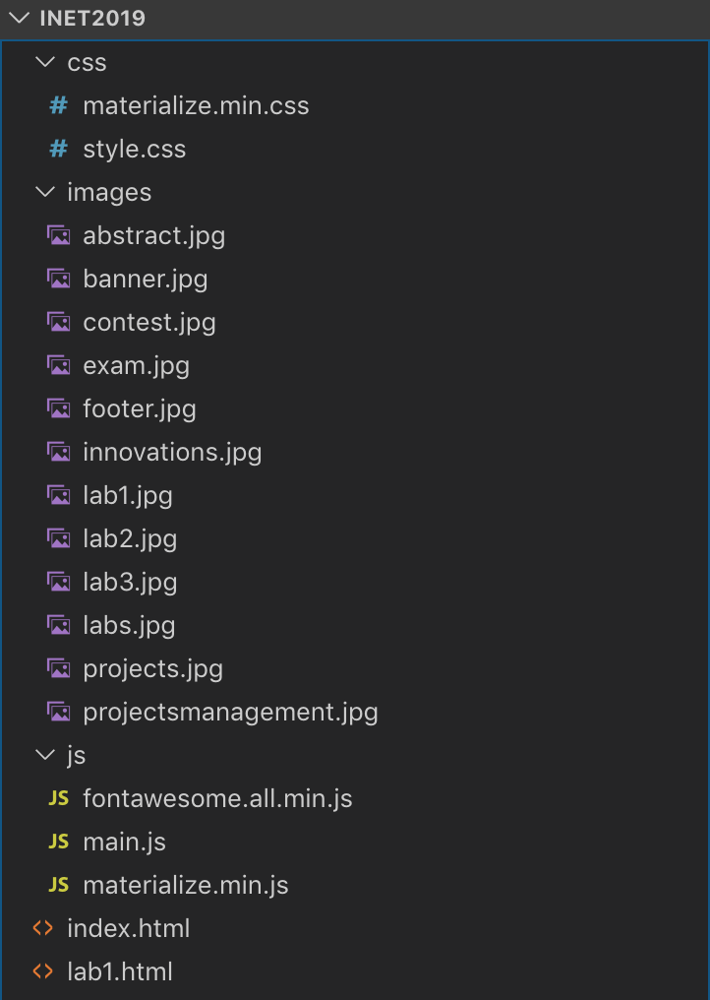
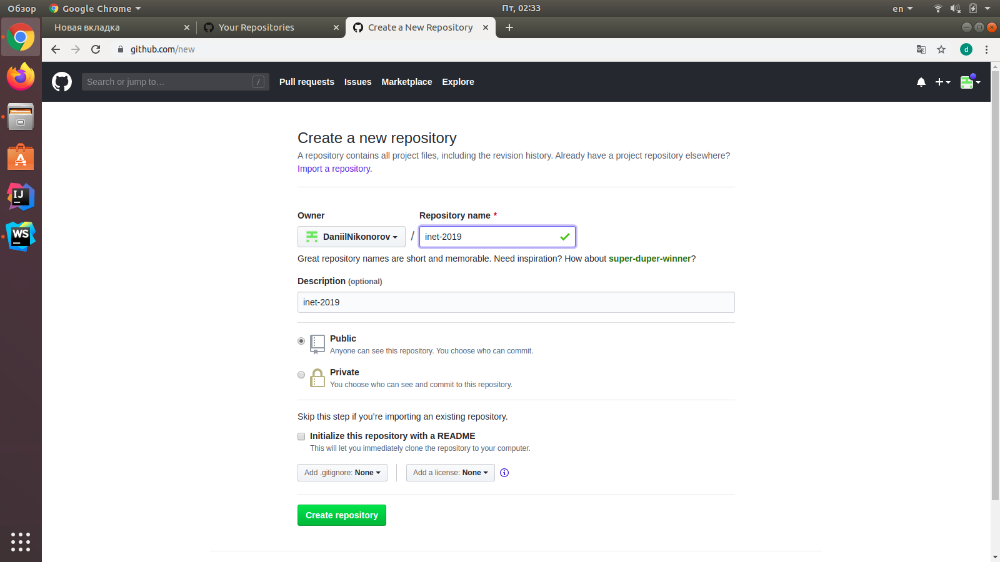
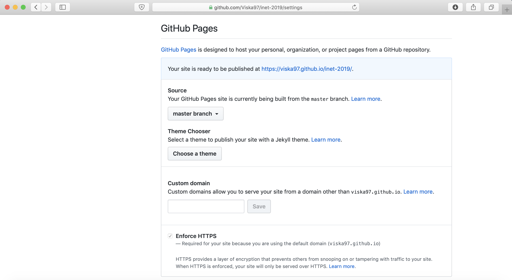
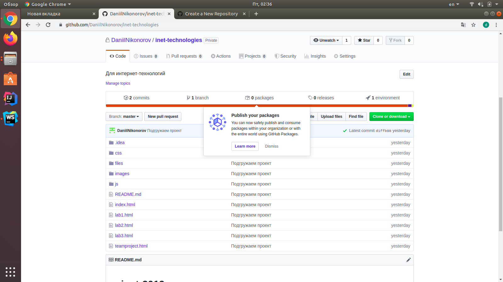

Для выполнения работы была использована уже существующая учетная запись mkolya31
Была создана папка inet2019, в которой располагаются файлы проекта. Проект представляет собой веб сайт, созданный с использованием технологий HTML, CSS и JavaScript. Внешний вид вложенных каталогов и файлов проекта представлен на рисунке 1.
Рис. 1. Файлы проекта inet2019
Описание структуры проекта представлено в таблице ниже:
| Путь | Назначение |
|---|---|
| css/materialize.min.css | Таблица стилей фреймворка Materialize |
| css/style.css | Главная таблица стилей сайта |
| images/ | Изображения, используемые на страницах сайта |
| js/fontawesome.all.min.js | JavaScript код библиотеки Font Awesome |
| js/main.js | Главный файл, содержащий JavaScript код сайта |
| js/materialize.min.js | JavaScript код фреймворка Materialize |
| index.html | Разметка главной страницы сайта |
С помощью веб интерфейса Github был создан новый репозиторий inet-2019 (рисунок 2).
Рис. 2. Создание репозитория inet-2019
Затем был создан локальный Git репозиторий, файлы проекта были закоммичены в ветку master и ветка master была синхронизирована с ранее созданным удаленным репозиторием на Github:
git init
git add .
git commit -m "Initial commit"
git remote add origin "https://github.com/mkolya31/inet-technologies.git"
git push -u origin master
В настройках репозитория был активирован хостинг Github Pages (рисунок 3).
Рис. 3. Настройка публикации на Github Pages
Внесенные в репозиторий (рисунок 4) изменения были успешно опубликованы хостингом Github Pages. Опубликованную страницу-отчет можно увидеть по соотвествующему адресу (рисунок 5).
Рис. 4. Внешний вид репозитория
Рис. 5. Внешний вид персональной страницы-отчета